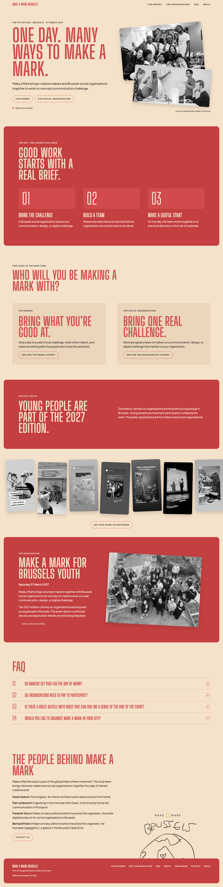

18 October 2026 · Proposals only
Say it once.
Make it clear.
My recommendation: give each section one job. Explain the event once, help people choose their route, then give them the facts they need to apply.
The page keeps returning to the same promise: makers and organisations working together on a real challenge. Keep the warmth. Cut the repeated setup.
The same explanation in five places.
The hero, process, organisation panel, edition text and About intro all explain the collaboration again. Each adds little to that basic explanation. [1–4]
“brings creative makers and Brussels social organisations together”
“Work alongside a team of makers on a communication, design, or digital challenge”
“brings volunteer makers together with Brussels social organisations for one day of creative work”
Interpretation: the sequence feels busy because several large headings restart the pitch. Shorter sentences alone would leave that pattern intact.

Current local homepage, captured during this review. Scroll inside the image, or open full size. Mobile capture.
“Applications open” conflicts with “application details are still being prepared.” Both appear on the current page. Keep the open status and remove the obsolete application caveat. Verify the venue separately before replacing its caveat. [3, lines 8–13]
Make these four cuts.
These keep the two equal applicant routes and the existing page boundaries. They change how much each section says. The agreed structure explicitly left content reduction open. [5–6]
The messages worth keeping.
One day. Many ways to make a mark.
Volunteer makers and Brussels social organisations team up for one day to work on communication, design and digital challenges.
27 March 2027 · Brussels · Applications open
Organisations bring a challenge. We select and match teams before the day. Together, they work on a practical direction or first materials.
This year, we're working with organisations that support young people in Brussels.
Each audience gets a distinct reason.
Give your creative skills to a local project and meet other makers.
Link: Maker details
Work with a maker team on one communication, design or digital challenge.
Link: Organisation details
Then explain the commitment.
Suggested audience-page copy, before the application ask:
Makers: Volunteer a full day and join a planning meeting beforehand. We select makers and match teams in advance.
Organisations: Taking part is free. Prepare your brief and materials, join a planning meeting, and take part in feedback and the evening presentation.
The current forms request these commitments. Their requiredness is still under review. Keep that uncertainty in the review record; confirm the final schedule before publishing specifics. [9–10,12]
Drafts draw on the current brief, process and forms. They promise a day of collaboration, without guaranteeing a finished product. Maker motivation is an editorial hypothesis, not validated current audience research. [1,3,5,7–10]
Give each fact a home.
| Message | Main home | What to remove or retain |
|---|---|---|
| What Make a Mark does | Hero | Cut full restatements in the edition block and About. |
| How teams work | Short homepage process | Keep detailed selection and preparation on audience pages. |
| Why take part | One line per audience card | Use different benefits for each audience. Keep route links in the hero and navigation. |
| Date, youth focus, status | One edition block | Repeat date/status where needed to apply. Remove the separate youth pitch and obsolete application caveat. |
| Cost and time | Audience pages, then form reminder | Replace “Kind of” with “No. Makers volunteer their time and skills.” Keep practical repetition at the decision point. [11] |
| Past work and atmosphere | One evidence moment | Use a real Brussels image and a descriptive BRUZZ link. More photos can live on Instagram. |
| Team and global movement | About and footer | Keep people and contact details; say the global affiliation once. |
Scope, evidence and limits
This is an editorial review of the running homepage, both audience pages and application introductions. Forms were read for commitments; field removal is outside this review. No product copy, routes, styles or forms were changed.
These are recommendations, not tested conversion improvements. Unknowns remain around venue, detailed schedule, review timing, eligible maker roles and how young people take part. The draft does not invent answers. [7]
The overview uses the project's own design system: Big Shoulders Display, Plus Jakarta Sans, red ink and cream paper. Current homepage screenshots were captured with the project's existing Playwright helper at desktop and mobile sizes.
- Homepage template, lines 26–57. Process, audience panels and separate youth block.
- Shared content, lines 36–38 and 63–77. Hero, About and footer copy.
- 2027 edition content, lines 5–13. Date, open status and conflicting body text.
- About template and story strip. Current supporting content.
- UX Strategy, equal applicant audiences and application objective.
- UX Structure, open question about retained content; UX Skeleton, homepage and audience-page hierarchy.
- Tone of voice, practical answers, commitments, youth participation and factual limits.
- Audience template, lines 8–45. Repeated invitations, selection and application buttons.
- Maker form, practical details. Full day and planning availability.
- Organisation form, time commitment. Materials, planning, feedback and presentation.
- Current FAQs, payment answer, BRUZZ and global organiser links.
- Build concerns snapshot, B-001 field review and B-007 temporary international photography.